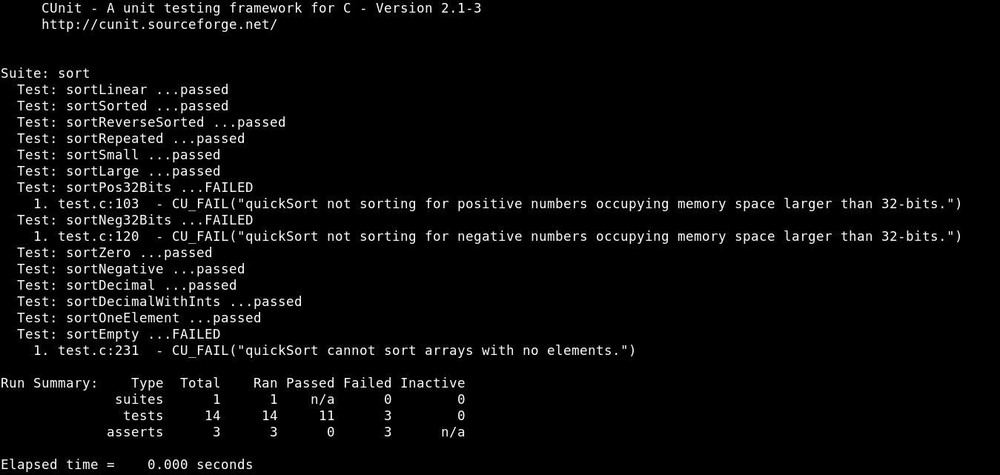
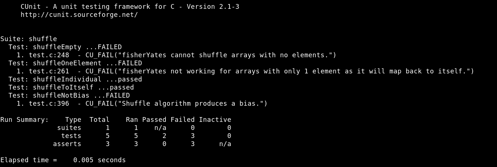

Task - Create a program that tests the quicksort and fisherYates methods provided.
- Test Completeness of quicksort.

- Test Completeness of fisherYates.

Fun Facts
- The Knuth Fisher-Yates shuffle algorithm used in the iPod Playlist is inserted into the sortAndShuffle.c file. One could modify the pre-processor directive variables to enable the use of the algorithm to prove that the algorithm is unbiased.
{% include footer.html %}